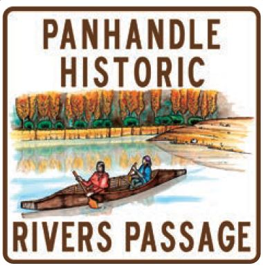

The Panhandle Historic Rivers Passage begins at the Washington
state line and follows the northern shore of the Pend Oreille River
through Oldtown, Priest River, and ends in Sandpoint.
This byway is the southern leg of the International Selkirk Loop
which extends into Washington on the west and heads into British
Columbia on the Wild Horse Trail Scenic Byway from Sandpoint
on the east.
Enjoy driving along miles of soothing river scenery that reflects
the pastoral beauty of surrounding forests and farms. Pull over
and be entertained by varying seasonal wildlife, birds of prey,
and waterfowl; or stop and absorb the history of northern Idaho
in three different museums along the byway.
This history extends back to the ice age and the Great Missoula
Floods. Convenient access to the Pend Oreille River at four recreation
areas provides opportunities to swim or boat along spacious,
gently-flowing waters. Winter recreation includes snow sports
on state and federal lands, ice fishing when it is cold enough,
and downhill skiing at Schweitzer.